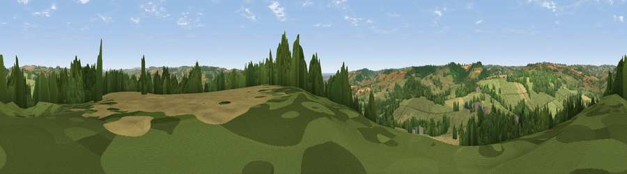

Shute Hill
#23356 in England · top 55% of its area beats it · near ShuteWhere it is
The exact computed spot (SY 25348 98400). Click the marker for map links.
The view, rendered

A 360° render of this exact spot computed from the terrain model, tree cover and land cover — summer colours, afternoon light, calibrated against photographs of famous viewpoints. Real trees, hedges and buildings will differ in detail.
The panorama
Grey silhouette: terrain skyline in each direction (720 bearings, Earth curvature and refraction included). Dashed green: skyline with trees (+15 m) and buildings (+8 m) as obstacles. Blue strip: how far the ground is visible on each bearing.
Where the view opens
Wedge length = distance to the farthest visible ground on that bearing (vegetation-aware). Rings at 10, 25 and 50 km.
What fills the view
57% grassland · 22% woodland · 19% cropland · 1% built-up ·
Angular shares of the visible panorama (visual magnitude), not map area. Landscape diversity 0.46 (0–1 Shannon).
Key numbers
More beautiful places nearby
The staircase of upgrades: each row has a higher view potential than everything closer. Driving times are estimates from straight-line distance, calibrated against real road routing — check an actual route before setting out.
| Place | Direction | Drive | Score |
|---|---|---|---|
| The Beacon | SSE · 1 km | ~3 min | 58.1 |
| Viewpoint near Dalwood | N · 3 km | ~8 min | 59.5 |
| Widworthy Hill | W · 4 km | ~9 min | 64.6 |
| Viewpoint near Axmouth | S · 7 km | ~15 min | 73.4 |
| Viewpoint near Axmouth | SSE · 9 km | ~17 min | 78.5 |
| Viewpoint near Axmouth | SSE · 9 km | ~18 min | 80.2 |
| Viewpoint near Axmouth | SSE · 9 km | ~18 min | 82.4 |
| Golden Cap | ESE · 17 km | ~29 min | 88.7 |
50.78035, -3.06024 · source: dobih hill · position refined by local search. Computed location — check access rights before visiting.